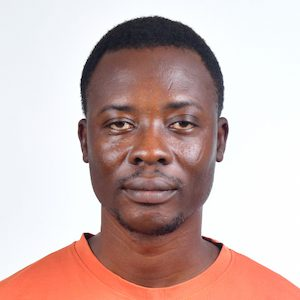

Tiempo Sanwogou | WDD 130
My name is Tiempo Sanwogou and I'm very excited to take this class with you. I'm from Togo, a french speaking country bordered with to Ghana. I'm married to a beautiful and wonderful wife named Lebenam and We have 3 children, including 2 daughters, Melina and Eliana, and a boy named Ivan. We recently lost our 4th child, whose pregnancy could not reach term. I had a privilege to serve a fulltime mission in Lagos Nigeria with succes from 2012 to 2014 I'm a passionate of geopolitics and I like watching korean historical drama I enjoy working in a team, meeting new people, and building relationships. I hope to have a great time with you throughout this course. Nice to meet you.